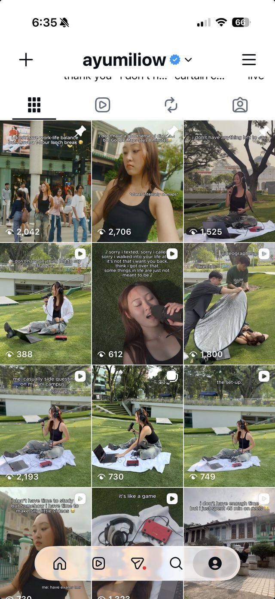
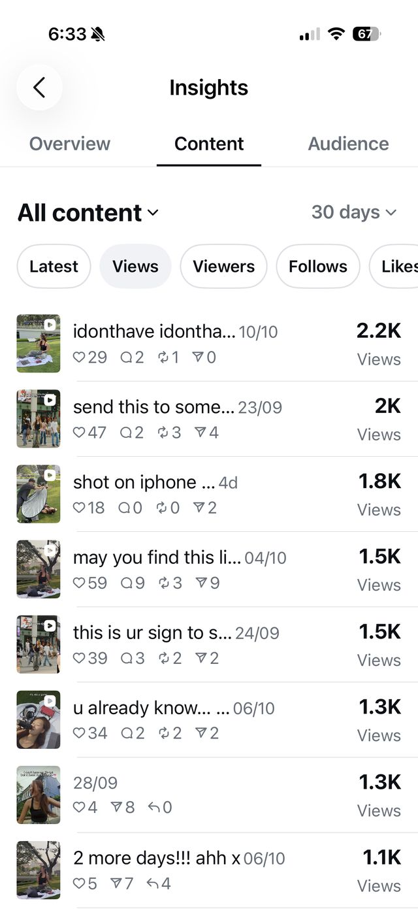
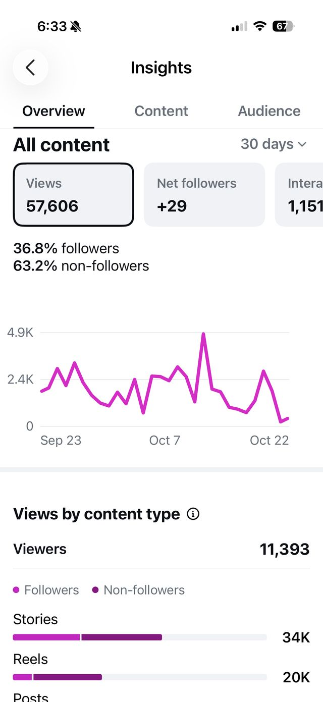
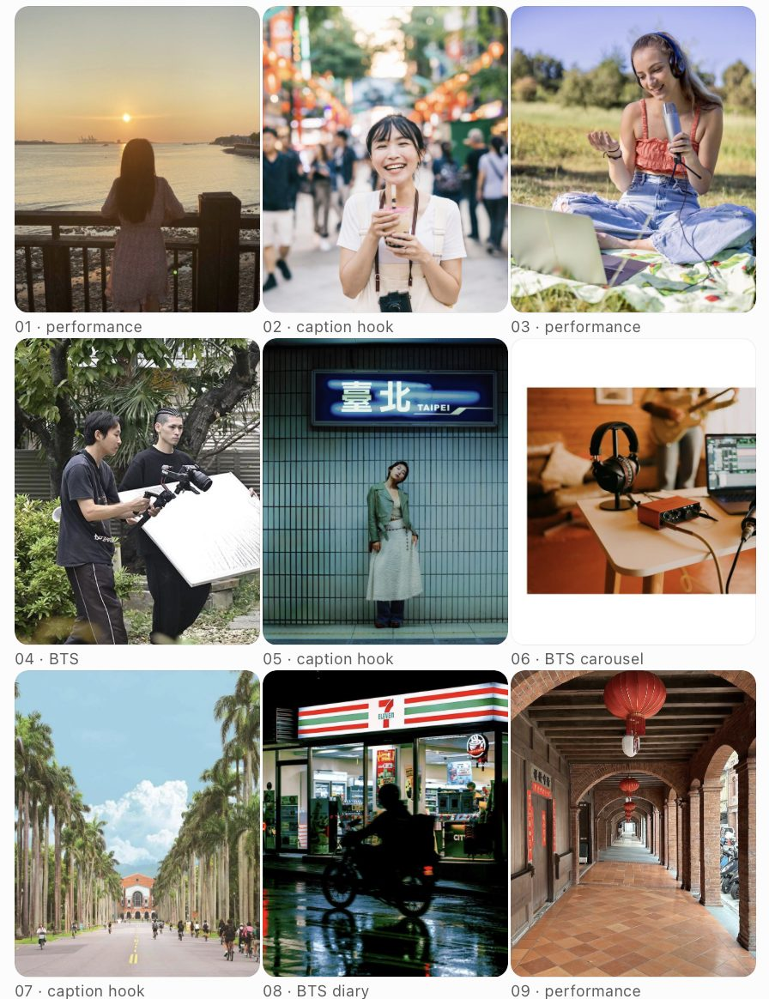

A Singapore girl in Taipei, romanticising the little things while pretending she's completely fine. 一個新加坡女生在台北，把生活小事過得很浪漫，同時假裝自己一切都很好。
"i don't have ___ but ___" jokes reach strangers.
Best post: 2,706 viewsSinging on the grass turns viewers into followers.
Top post for follows: +7The crew, the gear and the process show your personality.
"how we shot it": 2.1K new viewersAbout 1 in 300 people you reach becomes a fan. Raising that number matters more than getting more views.



Instagram grid views as of 23 Oct. The tree performance brought the most follows (+7) despite fewer views.
swipe away from Shorts.
Open on the joke or the best vocal line.
more Shorts views than full-song views.
Link every Short to the song.
until the release faded.
Plan a second wave: Taiwan + a bilingual version.
of viewers are regulars.
Run a series people can follow.
Keep the look people already recognise and move it to Taipei.

Post in reverse order: 09 first, 01 last, so the grid lines up. Each row has one hook, one performance and one BTS post. Each Prompt button copies a full image prompt for that tile. Ask a native speaker to check the Chinese captions.
Add a Mandarin verse as a duet with a Taiwanese indie singer. That gives the single a second release moment.
You cover their song in English and they cover yours in Mandarin. Post on the same day.
A language creator coaches your Mandarin chorus. The mistakes become the content.
Film tile 07 with a student music club and share the post with them.
A local videographer for tile 04, tagged so their audience finds you.
Shophouses, convenience stores, tea orders. Each one ends on a song line.
Use these in an AI image tool to preview the feed before you shoot. Open one, copy it, and add your own photos as a reference.
A creative moodboard collage for an indie pop singer's next Instagram chapter, titled "i don't have it figured out", set in Taipei, Taiwan. Creative direction: a Singapore girl in Taipei, romanticising the little things while pretending she's completely fine.
Square canvas, a loose scrapbook layout of 12 to 15 overlapping photos and colour swatches on off-white linen, with strips of masking tape and small handwritten lowercase labels.
Photos: a young East Asian woman with long brown wavy hair in a black tank top and baggy light-wash jeans, singing into a handheld mic with over-ear headphones on a white sheet on green grass; a laptop and a small red audio interface; a Tamsui river sunset; bubble tea in a lantern-lit night market; a teal-tiled metro station; a university avenue of royal palms; a convenience store glowing at night after rain; a red-brick shophouse arcade with red lanterns; a crew member holding a reflector.
Palette swatches: grass green, golden-hour amber, off-white, matte black, a pop of red, and one cool teal for night shots.
Feel: shot on iPhone, natural light, soft film grain, candid and unposed, lo-fi bedroom pop, a little funny, a little heartbroken. Use {YOUR PHOTOS} as character reference. No logos, no brand names, no watermark.
A realistic mock-up of an Instagram profile grid on a phone screen: 3 columns by 3 rows of vertical 4:5 photos with thin white gutters, a cohesive "Taipei diary" feed for an indie pop singer. Every tile looks like a candid iPhone photo with soft film grain, warm golden and muted green tones, and teal at night. The same young East Asian woman appears in most tiles: long brown wavy hair, black tank top, baggy light-wash jeans, over-ear headphones, handheld black microphone.
Row 1: from behind, at a riverside railing at sunset | laughing with bubble tea in a lantern-lit night market | singing cross-legged on a white sheet on grass, laptop and small red audio interface beside her.
Row 2: behind the scenes, a videographer with a gimbal and a crew member with a white reflector in a leafy park | standing deadpan against a teal-tiled metro wall under a glowing station sign | the gear on a table: headphones, mic, red audio interface, laptop.
Row 3: a university avenue lined with tall royal palms, students cycling | a convenience store glowing at night after rain, a scooter passing | a red-brick arched arcade with red lanterns.
Leave a clear band at the top of each tile for a caption. No real text, no logos, no brand names. Use {YOUR PHOTOS} for face consistency.
Vertical 4:5 photo for an Instagram feed post that looks like a candid iPhone shot. Natural late-afternoon daylight, soft warm golden tones, gentle film grain, slightly muted greens, no heavy filter.
A young East Asian woman in her early 20s with long brown hair in loose waves, wearing a black tank top, light-wash baggy distressed jeans and chunky black boots. She wears over-ear studio headphones and sings into a handheld black dynamic microphone, relaxed and unposed. Beside her on a white sheet: an open laptop, a small red USB audio interface and loose cables.
Setting: {TILE}
It should sit naturally in a "Taipei diary" feed: same light, grain and palette as the other tiles. Leave the top fifth of the frame empty for a caption. No text, no logos, no brand names, no watermark.
I'm Ayumi, a Singapore-based singer-songwriter and university student. My English pop single "I Don't Have" came out on 9 Oct 2026. My next Instagram chapter is "i don't have it figured out": a Singapore girl in Taipei, romanticising the little things while pretending she's completely fine. My feed today: lo-fi, shot on iPhone, outdoors in daylight. I sing on the grass with headphones, a handheld mic, a laptop and a small red audio interface on a white sheet. I wear a black tank top and baggy jeans. Captions are lowercase and self-deprecating, usually "i don't have ___ but ___". I also post BTS labelled "director:" / "videographer:". Caption hooks get the most views (up to 2.7K), live singing gets the most follows, and BTS builds connection. Plan my next 9 posts as a cohesive 3x3 grid. For each tile give: grid position, format (Reel, photo or carousel), job (discovery, conversion or connection), Taiwan location, what's in the shot, an English caption in my style, a natural Traditional Chinese (Taiwan Mandarin) version, and which part of the song to use. Mix the three jobs in every row, give the posting order, and keep production to one phone and one friend.